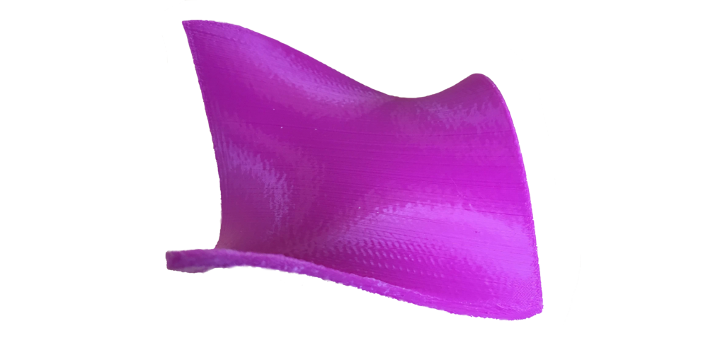
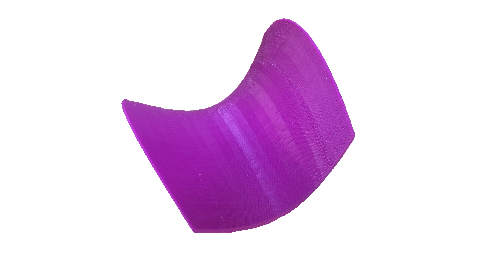

Catalog of 3D models
Monkey Saddle

- Stewart 11.7 Maximum and Minimum values
- A surface which a monkey can straddle with both legs and his tail. It is given by the equation $z=x^3-3xy^2$.
- The monkey saddle has a single critical point. The second derivative test is not sufficient to classify this critical point; it turns out to be a saddle point.
Cross sections

- Stewart 6.2 Volumes of Solids by Cross Sections
- These volumes all have a fixed bases given by circles, squares, or parabolas and have cross-sections given by rectangles or triangles.
- These cross-sections can be more easily seen by the discrete approximations to the volumes.
Paraboloids


- Stewart 6.2-6.3 Volumes of Solids of Revolution
- These models show the volume of a solid paraboloid being approximated using the disk and shell methods of integration.
Saddle

- Stewart 11.7 Maximum and Minimum values
- The surface given by the equation $z=x^2-y^2$ has a critical point at the origin that is neither a relative maximum nor a relative minimum.
Triangle parabola

- Stewart 6.2 Exercise 43
- The base of the solid is the region enclosed by the parabola $y=1-x^2$ and the $x$-axis. The cross-sections perpendicular to the $x$-axis are isosceles triangles with height equal to the base.
Wedge

- Stewart 6.2 Exercise 46
- A wedge cut out of a circular cylinder of radius 4 by two planes. One plane is perpendicular to the axis of the cylinder. The other intersects the first at an angle of 30$^circ$ along a diameter of the cylinder.